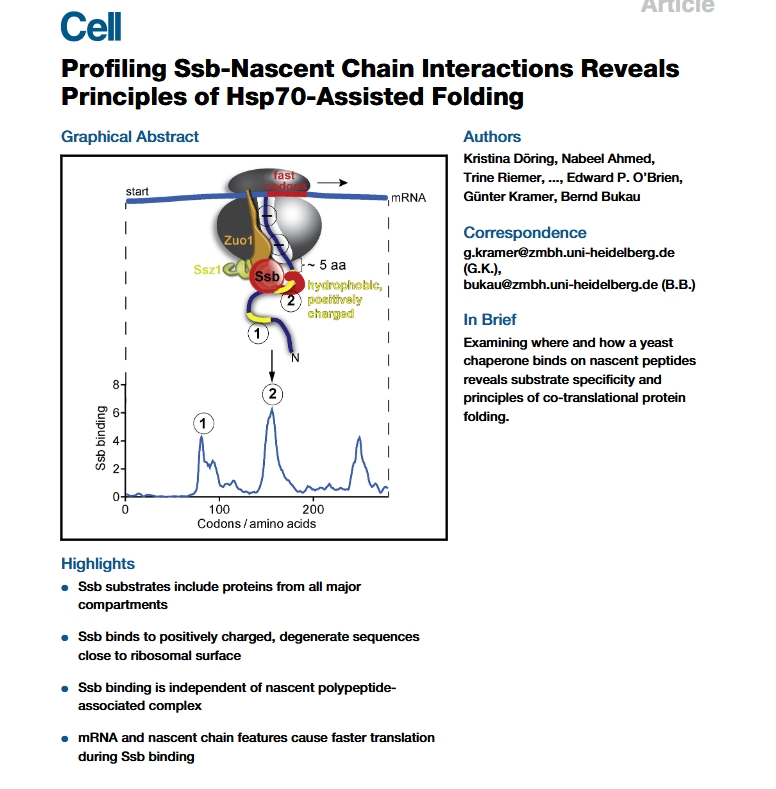
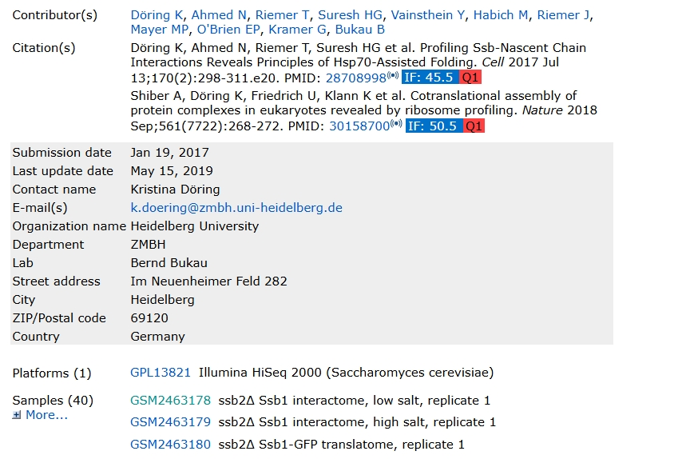

#!/usr/bin/env bash
ascp -QT -l 300m -P33001 -i $HOME/.aspera/connect/etc/asperaweb_id_dsa.openssh era-fasp@fasp.sra.ebi.ac.uk:vol1/fastq/SRR518/009/SRR5188589/SRR5188589.fastq.gz . && mv SRR5188589.fastq.gz ssb2_Ssb1_interactome_low_salt_rep1.fastq.gz
ascp -QT -l 300m -P33001 -i $HOME/.aspera/connect/etc/asperaweb_id_dsa.openssh era-fasp@fasp.sra.ebi.ac.uk:vol1/fastq/SRR518/004/SRR5188624/SRR5188624.fastq.gz . && mv SRR5188624.fastq.gz RAC_Ssb2_interactome_rep2.fastq.gz
ascp -QT -l 300m -P33001 -i $HOME/.aspera/connect/etc/asperaweb_id_dsa.openssh era-fasp@fasp.sra.ebi.ac.uk:vol1/fastq/SRR518/004/SRR5188594/SRR5188594.fastq.gz . && mv SRR5188594.fastq.gz ssb1_Ssb2-GFP_translatome_rep1.fastq.gz
ascp -QT -l 300m -P33001 -i $HOME/.aspera/connect/etc/asperaweb_id_dsa.openssh era-fasp@fasp.sra.ebi.ac.uk:vol1/fastq/SRR518/002/SRR5188592/SRR5188592.fastq.gz . && mv SRR5188592.fastq.gz ssb1_Ssb2_interactome_low_salt_rep1.fastq.gz
ascp -QT -l 300m -P33001 -i $HOME/.aspera/connect/etc/asperaweb_id_dsa.openssh era-fasp@fasp.sra.ebi.ac.uk:vol1/fastq/SRR518/008/SRR5188628/SRR5188628.fastq.gz . && mv SRR5188628.fastq.gz ssb1_ssb2_translatome_rep2.fastq.gz
ascp -QT -l 300m -P33001 -i $HOME/.aspera/connect/etc/asperaweb_id_dsa.openssh era-fasp@fasp.sra.ebi.ac.uk:vol1/fastq/SRR518/005/SRR5188625/SRR5188625.fastq.gz . && mv SRR5188625.fastq.gz WT_translatome_rep1.fastq.gz
ascp -QT -l 300m -P33001 -i $HOME/.aspera/connect/etc/asperaweb_id_dsa.openssh era-fasp@fasp.sra.ebi.ac.uk:vol1/fastq/SRR518/006/SRR5188616/SRR5188616.fastq.gz . && mv SRR5188616.fastq.gz WT_Ssb2_interactome_rep2.fastq.gz
ascp -QT -l 300m -P33001 -i $HOME/.aspera/connect/etc/asperaweb_id_dsa.openssh era-fasp@fasp.sra.ebi.ac.uk:vol1/fastq/SRR518/007/SRR5188617/SRR5188617.fastq.gz . && mv SRR5188617.fastq.gz NAC_Ssb1-GFP_translatome_rep2.fastq.gz
ascp -QT -l 300m -P33001 -i $HOME/.aspera/connect/etc/asperaweb_id_dsa.openssh era-fasp@fasp.sra.ebi.ac.uk:vol1/fastq/SRR518/000/SRR5188600/SRR5188600.fastq.gz . && mv SRR5188600.fastq.gz ssb1_Ssb2-GFP_translatome_rep2.fastq.gz
ascp -QT -l 300m -P33001 -i $HOME/.aspera/connect/etc/asperaweb_id_dsa.openssh era-fasp@fasp.sra.ebi.ac.uk:vol1/fastq/SRR518/008/SRR5188598/SRR5188598.fastq.gz . && mv SRR5188598.fastq.gz ssb1_Ssb2_interactome_low_salt_rep2.fastq.gz
ascp -QT -l 300m -P33001 -i $HOME/.aspera/connect/etc/asperaweb_id_dsa.openssh era-fasp@fasp.sra.ebi.ac.uk:vol1/fastq/SRR518/001/SRR5188591/SRR5188591.fastq.gz . && mv SRR5188591.fastq.gz ssb2_Ssb1-GFP_translatome_rep1.fastq.gz
ascp -QT -l 300m -P33001 -i $HOME/.aspera/connect/etc/asperaweb_id_dsa.openssh era-fasp@fasp.sra.ebi.ac.uk:vol1/fastq/SRR518/002/SRR5188602/SRR5188602.fastq.gz . && mv SRR5188602.fastq.gz WT_Ssb2-GFP_translatome_rep1.fastq.gz
ascp -QT -l 300m -P33001 -i $HOME/.aspera/connect/etc/asperaweb_id_dsa.openssh era-fasp@fasp.sra.ebi.ac.uk:vol1/fastq/SRR518/007/SRR5188627/SRR5188627.fastq.gz . && mv SRR5188627.fastq.gz ssb1_ssb2_translatome_rep1.fastq.gz
ascp -QT -l 300m -P33001 -i $HOME/.aspera/connect/etc/asperaweb_id_dsa.openssh era-fasp@fasp.sra.ebi.ac.uk:vol1/fastq/SRR518/007/SRR5188597/SRR5188597.fastq.gz . && mv SRR5188597.fastq.gz ssb2_Ssb1-GFP_translatome_rep2.fastq.gz
ascp -QT -l 300m -P33001 -i $HOME/.aspera/connect/etc/asperaweb_id_dsa.openssh era-fasp@fasp.sra.ebi.ac.uk:vol1/fastq/SRR518/007/SRR5188607/SRR5188607.fastq.gz . && mv SRR5188607.fastq.gz NAC_Ssb1_interactome_rep1.fastq.gz
ascp -QT -l 300m -P33001 -i $HOME/.aspera/connect/etc/asperaweb_id_dsa.openssh era-fasp@fasp.sra.ebi.ac.uk:vol1/fastq/SRR518/001/SRR5188621/SRR5188621.fastq.gz . && mv SRR5188621.fastq.gz RAC_Ssb1-GFP_translatome_rep2.fastq.gz
ascp -QT -l 300m -P33001 -i $HOME/.aspera/connect/etc/asperaweb_id_dsa.openssh era-fasp@fasp.sra.ebi.ac.uk:vol1/fastq/SRR518/004/SRR5188614/SRR5188614.fastq.gz . && mv SRR5188614.fastq.gz WT_Ssb2-GFP_translatome_rep2.fastq.gz
ascp -QT -l 300m -P33001 -i $HOME/.aspera/connect/etc/asperaweb_id_dsa.openssh era-fasp@fasp.sra.ebi.ac.uk:vol1/fastq/SRR518/003/SRR5188613/SRR5188613.fastq.gz . && mv SRR5188613.fastq.gz WT_Ssb1-GFP_translatome_rep2.fastq.gz
ascp -QT -l 300m -P33001 -i $HOME/.aspera/connect/etc/asperaweb_id_dsa.openssh era-fasp@fasp.sra.ebi.ac.uk:vol1/fastq/SRR518/003/SRR5188603/SRR5188603.fastq.gz . && mv SRR5188603.fastq.gz WT_Ssb1_interactome_rep1.fastq.gz
ascp -QT -l 300m -P33001 -i $HOME/.aspera/connect/etc/asperaweb_id_dsa.openssh era-fasp@fasp.sra.ebi.ac.uk:vol1/fastq/SRR518/005/SRR5188595/SRR5188595.fastq.gz . && mv SRR5188595.fastq.gz ssb2_Ssb1_interactome_low_salt_rep2.fastq.gz
ascp -QT -l 300m -P33001 -i $HOME/.aspera/connect/etc/asperaweb_id_dsa.openssh era-fasp@fasp.sra.ebi.ac.uk:vol1/fastq/SRR518/001/SRR5188611/SRR5188611.fastq.gz . && mv SRR5188611.fastq.gz RAC_Ssb1_interactome_rep1.fastq.gz
ascp -QT -l 300m -P33001 -i $HOME/.aspera/connect/etc/asperaweb_id_dsa.openssh era-fasp@fasp.sra.ebi.ac.uk:vol1/fastq/SRR518/008/SRR5188608/SRR5188608.fastq.gz . && mv SRR5188608.fastq.gz NAC_Ssb2_interactome_rep1.fastq.gz
ascp -QT -l 300m -P33001 -i $HOME/.aspera/connect/etc/asperaweb_id_dsa.openssh era-fasp@fasp.sra.ebi.ac.uk:vol1/fastq/SRR518/006/SRR5188626/SRR5188626.fastq.gz . && mv SRR5188626.fastq.gz WT_translatome_rep2.fastq.gz
ascp -QT -l 300m -P33001 -i $HOME/.aspera/connect/etc/asperaweb_id_dsa.openssh era-fasp@fasp.sra.ebi.ac.uk:vol1/fastq/SRR518/008/SRR5188618/SRR5188618.fastq.gz . && mv SRR5188618.fastq.gz NAC_Ssb2-GFP_translatome_rep2.fastq.gz
ascp -QT -l 300m -P33001 -i $HOME/.aspera/connect/etc/asperaweb_id_dsa.openssh era-fasp@fasp.sra.ebi.ac.uk:vol1/fastq/SRR518/001/SRR5188601/SRR5188601.fastq.gz . && mv SRR5188601.fastq.gz WT_Ssb1-GFP_translatome_rep1.fastq.gz
ascp -QT -l 300m -P33001 -i $HOME/.aspera/connect/etc/asperaweb_id_dsa.openssh era-fasp@fasp.sra.ebi.ac.uk:vol1/fastq/SRR518/006/SRR5188596/SRR5188596.fastq.gz . && mv SRR5188596.fastq.gz ssb2_Ssb1_interactome_high_salt_rep2.fastq.gz
ascp -QT -l 300m -P33001 -i $HOME/.aspera/connect/etc/asperaweb_id_dsa.openssh era-fasp@fasp.sra.ebi.ac.uk:vol1/fastq/SRR518/000/SRR5188610/SRR5188610.fastq.gz . && mv SRR5188610.fastq.gz RAC_Ssb2-GFP_translatome_rep1.fastq.gz
ascp -QT -l 300m -P33001 -i $HOME/.aspera/connect/etc/asperaweb_id_dsa.openssh era-fasp@fasp.sra.ebi.ac.uk:vol1/fastq/SRR518/003/SRR5188593/SRR5188593.fastq.gz . && mv SRR5188593.fastq.gz ssb1_Ssb2_interactome_high_salt_rep1.fastq.gz
ascp -QT -l 300m -P33001 -i $HOME/.aspera/connect/etc/asperaweb_id_dsa.openssh era-fasp@fasp.sra.ebi.ac.uk:vol1/fastq/SRR518/005/SRR5188615/SRR5188615.fastq.gz . && mv SRR5188615.fastq.gz WT_Ssb1_interactome_rep2.fastq.gz
ascp -QT -l 300m -P33001 -i $HOME/.aspera/connect/etc/asperaweb_id_dsa.openssh era-fasp@fasp.sra.ebi.ac.uk:vol1/fastq/SRR518/000/SRR5188620/SRR5188620.fastq.gz . && mv SRR5188620.fastq.gz NAC_Ssb2_interactome_rep2.fastq.gz
ascp -QT -l 300m -P33001 -i $HOME/.aspera/connect/etc/asperaweb_id_dsa.openssh era-fasp@fasp.sra.ebi.ac.uk:vol1/fastq/SRR518/009/SRR5188609/SRR5188609.fastq.gz . && mv SRR5188609.fastq.gz RAC_Ssb1-GFP_translatome_rep1.fastq.gz
ascp -QT -l 300m -P33001 -i $HOME/.aspera/connect/etc/asperaweb_id_dsa.openssh era-fasp@fasp.sra.ebi.ac.uk:vol1/fastq/SRR518/009/SRR5188599/SRR5188599.fastq.gz . && mv SRR5188599.fastq.gz ssb1_Ssb2_interactome_high_salt_rep2.fastq.gz
ascp -QT -l 300m -P33001 -i $HOME/.aspera/connect/etc/asperaweb_id_dsa.openssh era-fasp@fasp.sra.ebi.ac.uk:vol1/fastq/SRR518/002/SRR5188622/SRR5188622.fastq.gz . && mv SRR5188622.fastq.gz RAC_Ssb2-GFP_translatome_rep2.fastq.gz
ascp -QT -l 300m -P33001 -i $HOME/.aspera/connect/etc/asperaweb_id_dsa.openssh era-fasp@fasp.sra.ebi.ac.uk:vol1/fastq/SRR518/002/SRR5188612/SRR5188612.fastq.gz . && mv SRR5188612.fastq.gz RAC_Ssb2_interactome_rep1.fastq.gz
ascp -QT -l 300m -P33001 -i $HOME/.aspera/connect/etc/asperaweb_id_dsa.openssh era-fasp@fasp.sra.ebi.ac.uk:vol1/fastq/SRR518/009/SRR5188619/SRR5188619.fastq.gz . && mv SRR5188619.fastq.gz NAC_Ssb1_interactome_rep2.fastq.gz
ascp -QT -l 300m -P33001 -i $HOME/.aspera/connect/etc/asperaweb_id_dsa.openssh era-fasp@fasp.sra.ebi.ac.uk:vol1/fastq/SRR518/004/SRR5188604/SRR5188604.fastq.gz . && mv SRR5188604.fastq.gz WT_Ssb2_interactome_rep1.fastq.gz
ascp -QT -l 300m -P33001 -i $HOME/.aspera/connect/etc/asperaweb_id_dsa.openssh era-fasp@fasp.sra.ebi.ac.uk:vol1/fastq/SRR518/003/SRR5188623/SRR5188623.fastq.gz . && mv SRR5188623.fastq.gz RAC_Ssb1_interactome_rep2.fastq.gz
ascp -QT -l 300m -P33001 -i $HOME/.aspera/connect/etc/asperaweb_id_dsa.openssh era-fasp@fasp.sra.ebi.ac.uk:vol1/fastq/SRR518/006/SRR5188606/SRR5188606.fastq.gz . && mv SRR5188606.fastq.gz NAC_Ssb2-GFP_translatome_rep1.fastq.gz
ascp -QT -l 300m -P33001 -i $HOME/.aspera/connect/etc/asperaweb_id_dsa.openssh era-fasp@fasp.sra.ebi.ac.uk:vol1/fastq/SRR518/005/SRR5188605/SRR5188605.fastq.gz . && mv SRR5188605.fastq.gz NAC_Ssb1-GFP_translatome_rep1.fastq.gz
ascp -QT -l 300m -P33001 -i $HOME/.aspera/connect/etc/asperaweb_id_dsa.openssh era-fasp@fasp.sra.ebi.ac.uk:vol1/fastq/SRR518/000/SRR5188590/SRR5188590.fastq.gz . && mv SRR5188590.fastq.gz ssb2_Ssb1_interactome_high_salt_rep1.fastq.gz3 Selective ribosome profiling
3.1 Inro
In this section, we reanalyze selective ribosome profiling data from the study titled “Profiling Ssb–Nascent Chain Interactions Reveals Principles of Hsp70-Assisted Folding” , published in Cell in 2017. This dataset provides an excellent example of how selective ribosome profiling can be used to dissect ribosome-associated interactions—in this case, focusing on the Hsp70 chaperone Ssb and its role in co-translational protein folding.
This study investigates how the ribosome-associated Hsp70 chaperone Ssb (found in yeast) engages with nascent polypeptides during translation, uncovering key principles of co-translational protein folding. The researchers employed a high-resolution approach—Selective Ribosome Profiling (SeRP)—to globally map Ssb-substrate interactions with near codon-level resolution in vivo.

3.2 Data download
The uploaded data is at GEO database GSE93830:

We retrieve the Aspera download links for each individual sample from SRA Explorer, and then use the Aspera command-line client (ascp) under a Linux environment to quickly and reliably download the corresponding FASTQ files:
3.3 Removal of Adapter Contamination
Following the methods described in the original publication, we removed adapter sequences from the raw sequencing data using Cutadapt. The command below was applied to all libraries to trim 3’ adapter contamination:
for i in NAC_Ssb1-GFP_translatome_rep NAC_Ssb1_interactome_rep NAC_Ssb2-GFP_translatome_rep NAC_Ssb2_interactome_rep \
RAC_Ssb1-GFP_translatome_rep RAC_Ssb1_interactome_rep RAC_Ssb2-GFP_translatome_rep RAC_Ssb2_interactome_rep \
ssb1_Ssb2-GFP_translatome_rep ssb1_Ssb2_interactome_high_salt_rep ssb1_Ssb2_interactome_low_salt_rep \
ssb1_ssb2_translatome_rep ssb2_Ssb1-GFP_translatome_rep ssb2_Ssb1_interactome_high_salt_rep \
ssb2_Ssb1_interactome_low_salt_rep WT_Ssb1-GFP_translatome_rep WT_Ssb1_interactome_rep \
WT_Ssb2-GFP_translatome_rep WT_Ssb2_interactome_rep WT_translatome_rep
do
for j in 1 2
do
cutadapt -j 25 -a CTGTAGGCACCATCAATTCGTATGCCGTCTT \
-m 20 -M 45 --discard-untrimmed \
-o ./${i}${j}_trim.fq.gz \
../1.raw-data/${i}${j}.fastq.gz
done
done3.4 Removal of rRNA Contamination
To eliminate reads originating from ribosomal RNA (rRNA), we aligned the trimmed reads to a reference rRNA database using Bowtie2. Reads that aligned to rRNA were discarded, and only unmapped reads, representing non-rRNA fragments, were retained for downstream analysis:
# rRNA removal using Bowtie2
for i in NAC_Ssb1-GFP_translatome_rep NAC_Ssb1_interactome_rep NAC_Ssb2-GFP_translatome_rep NAC_Ssb2_interactome_rep \
RAC_Ssb1-GFP_translatome_rep RAC_Ssb1_interactome_rep RAC_Ssb2-GFP_translatome_rep RAC_Ssb2_interactome_rep \
ssb1_Ssb2-GFP_translatome_rep ssb1_Ssb2_interactome_high_salt_rep ssb1_Ssb2_interactome_low_salt_rep \
ssb1_ssb2_translatome_rep ssb2_Ssb1-GFP_translatome_rep ssb2_Ssb1_interactome_high_salt_rep \
ssb2_Ssb1_interactome_low_salt_rep WT_Ssb1-GFP_translatome_rep WT_Ssb1_interactome_rep \
WT_Ssb2-GFP_translatome_rep WT_Ssb2_interactome_rep WT_translatome_rep
do
for j in 1 2
do
bowtie2 -p 25 -x ../../index-data/sac-rRNA-index/Saccharomyces-cerevisiae-rRNA \
--un-gz ${i}${j}.rmrRNA.fq.gz \
-U ../2.trim-data/${i}${j}_trim.fq.gz \
-S ./null
done
done3.5 Alignment to the Reference Genome
To align non-rRNA reads to the reference genome, we first constructed a Bowtie index using the Saccharomyces cerevisiae genome (version R64-1-1):
# Build Bowtie index
mkdir sac-bowtie-index
bowtie-build Saccharomyces_cerevisiae.R64-1-1.dna.toplevel.fa sac-bowtie-index/sacWe then aligned all rRNA-depleted libraries to the reference genome using Bowtie. The alignment was followed by sorting with samtools and removal of intermediate SAM files to conserve disk space:
#!/bin/bash
for i in WT_Ssb1-GFP_translatome_rep WT_Ssb1_interactome_rep WT_Ssb2-GFP_translatome_rep WT_Ssb2_interactome_rep \
WT_translatome_rep NAC_Ssb1-GFP_translatome_rep NAC_Ssb1_interactome_rep NAC_Ssb2-GFP_translatome_rep \
NAC_Ssb2_interactome_rep RAC_Ssb1-GFP_translatome_rep RAC_Ssb1_interactome_rep \
RAC_Ssb2-GFP_translatome_rep RAC_Ssb2_interactome_rep ssb1_Ssb2-GFP_translatome_rep \
ssb1_Ssb2_interactome_high_salt_rep ssb1_Ssb2_interactome_low_salt_rep ssb1_ssb2_translatome_rep \
ssb2_Ssb1-GFP_translatome_rep ssb2_Ssb1_interactome_high_salt_rep ssb2_Ssb1_interactome_low_salt_rep
do
for j in 1 2
do
# Align to genome using Bowtie (original version)
bowtie -p 25 ../../index-data/sac-bowtie-index/sac \
-v 2 -m 5 --best --strata \
<(zcat ../3.rmrRNA-data/${i}${j}.rmrRNA.fq.gz) \
-S ./${i}${j}.sam
# Convert SAM to sorted BAM
samtools sort -@ 25 -o ${i}${j}.bam ./${i}${j}.sam
rm ./${i}${j}.sam # Remove intermediate files
done
doneKey options explained:
-v 2: Allows up to 2 mismatches per read.-m 5: Discards reads that map to more than 5 locations (to avoid ambiguous mappings).--best --strata: Ensures the best alignment from the best strata is reported.-p 25: Uses 25 threads for parallel processing.samtools sort: Sorts alignments by genomic coordinates for downstream processing.